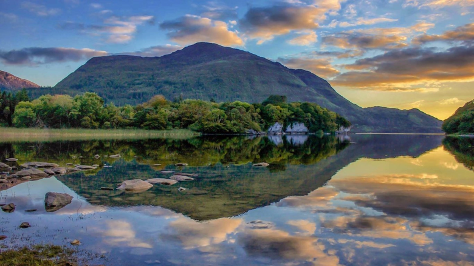

About Ireland
In Ireland a trip would give you an abundance of things to do to make it a wonderful trip. Known for it's beautiful scenery, insane amount of taverns, and its history inside of its beautiful country, there is something to do for the whole family. The country has been gaining a lot of tourism in recent years due to change of it's political stance. Since 1973 Ireland has been a pretty strict country as it wasn't really independent, but since 2008 it started to emerge as an independent country allowing more visitors to travel there, and since 2008 tourism has become abundant for the country. As people started to talk, the word got around of how beautiful this country was and now it has become one of the most well-known travel destinations in Europe. In this guide we will take a look at the top places for anyone to go to, to help you come up with the perfect plan.
Visit Kilmainham Gaol
Kilmainham Gaol is one of the most famous prisons in the world and especially the most famous in Ireland. The museum opened in 1796 and held all kinds of prisoners. It was especially notorious for holding and executing some of the most prominent leaders of the Easter Rising. The prison closed down in 1924 but was turned into a national museum in 1960. This museum has a pretty decent tour as far as the time slot goes and worth seeing as there is so much history held behind the walls and bars of this prison. The tours for this prison are pretty cheap as well and gives you several things to look at not just the Kilmainham Gaol. They often include a hop on and off bus tour around the Dublin.
Duration: 1 hour 40 minutes
Cost: 35 dollars per adult
Age Group: 5-99
Book Now
Killarney National Park
One of the best things to do in Ireland is take a look at their numerous national parks. With their vast landscape of rolling hills full of greenery and lakes, this provides a tourist with immense beauty. One of these national parks that Ireland is known for, is the Killarney National Park. Established in 1932, Killarney was the first National Park in Ireland. The national park is so diverse in its ecology and has numerous species of plants and animals. It includes the only red tail deer in Ireland and the most amount of forest left in Ireland. There's many lakes, mountains, and other landmarks to see as well. Lough Leane is the largest lake in all of Ireland and contains 30 islands! Tourists can also go see famous sandstone and limestone boundaries, as most of the national park consists of sandstone and limestone.The climate of Killarney is an oceanic climate, which means they experience very mild winters, but chilly summers as their is a ton of rainfall in this area. On average, the national park, experiences over a .04 inches of rain 223 days of the year.
Blarney Castle and Gardens
Whether you're into history or not, going to Blarney Castle is something that anyone would be able to enjoy. This castle dates back before 1200, which is not often with buildings today. The castle was first believed to have been built with wood as just a tiny house, and then was replaced with stone in 1210 with stone. in 1446 it was turned into a castle by Cormac Láidir MacCarthy. After many wars that beseiged the castle, the ownership of the castle changed several times. During the 15th century a mansion was built near the castle which is known as the Blarney House, which was burnt down and rebuilt into another mansion in 1874. Along with these tourist attractions, there is also beautiful and vast gardens that surround all of the castle and house. There is so much more to learn about with the history of the castle, while at the same time giving Tourists beautiful scenery to look at, giving anyone an amazing experience.
Book NowTry Ireland Food
Although when you think of Ireland you may think of their many pubs and famous beers, there is some great foods that Ireland is known for as well. With there always being a chilly breeze and countless rainy days, seafood chowder is just the thing someone needs to keep themselves warm in such a cold environment. These creamy soups are typically filled with vegetables along with oysters, mussels, and salmon. Another dish, which many people might not think would be their go to thing to try is Irish Soda Bread, butter, and cheese. Their somewhat sweet bread, along with their signature cheese, Gubbeen, makes it a perfect combination, especially with some wine. One more must try food in Ireland is a delicious dish called Boxty. Boxty is a potato cake basically, which then is fried on a griddle. There are also versions where it's mashed potatoes that are deep fried. So basically it's hashbrowns but ten times better.